Test 2: Registration
Test Objective: Verifies account creation on registration page successfully creates database records
| Step | Action | Expected Results | Dev Test | Peer Test |
|---|---|---|---|---|
| 1 | Open a browser and navigate to http://localhost:8080/marinawebsite/registration.jsp Or http://localhost:8081/marinawebsite/registration.jsp |
The account registration page should load with three cards (personal information, boat information, and user information) containing input fields | Pass | Pass |
Developer (Sara)  | ||||
| Step | Action | Expected Results | Dev Test | Peer Test |
| 2 | In the personal information section, enter your first and last name (or a name of your choosing) | Input fields should hold information typed in by user | Pass | Pass |
Developer (Sara) 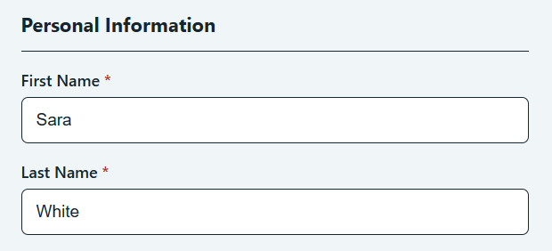 | ||||
| Step | Action | Expected Results | Dev Test | Peer Test |
| 3 | In the phone field, 555-555-5555 | “Phone number needs all 10 digits” message should disappear after entering full phone number. The field should contain the typed information. | Pass | Pass |
Developer (Sara) 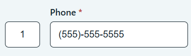 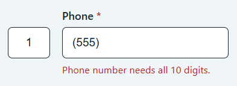 | ||||
| Step | Action | Expected Results | Dev Test | Peer Test |
| 4 | Select “United States” from the country drop down | Drop down should display “Canada”, “United States” and “Other” as three options. After selecting “United States”, that selection should remain in the country field | Pass | Not recorded |
Developer (Sara) 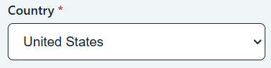 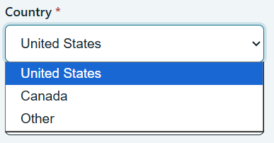 | ||||
| Step | Action | Expected Results | Dev Test | Peer Test |
| 5 | In the Streed Address Line field, enter: 123 ABC Drive And for the city, enter: Bellevue |
Pass | Not recorded | |
Developer (Sara) 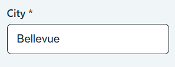 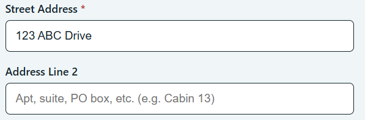 | ||||
| Step | Action | Expected Results | Dev Test | Peer Test |
| 6 | Select Nebraska from the state dropdown menu | Dropdown menu should display 50 states. After selecting “Nebraska”, that selection should remain in the state field | Pass | Pass |
Developer (Sara) 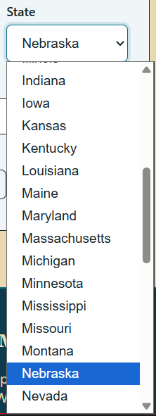 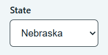 | ||||
| Step | Action | Expected Results | Dev Test | Peer Test |
| 7 | Enter 55555 for the zip code field | Zip code field should contain the entered zip code and message below stating “Enter a 5-digit ZIP, or ZIP +4 like 12345-6789” should disappear | Pass | Pass |
Developer (Sara) 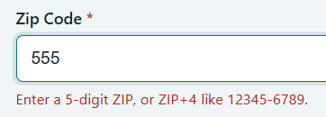 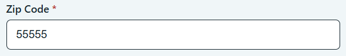 | ||||
| Step | Action | Expected Results | Dev Test | Peer Test |
| 8 | For the boat information section, enter the following: boat name: “Boatzilla” boat length: 30 HIN: ABC1234DEF67 Enter “NE 1234 AB” for the registration number |
Message below the field stating “Registration Number should be a 2-letter state code, 4 to 7 digits, then AB” should disappear | Pass | Pass |
Developer (Sara) 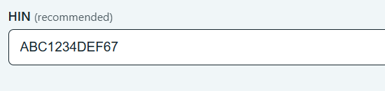 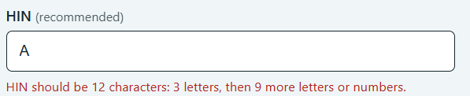 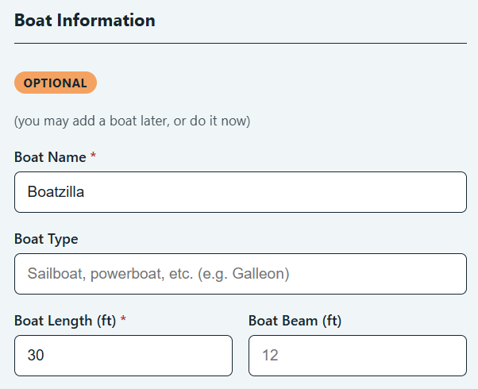 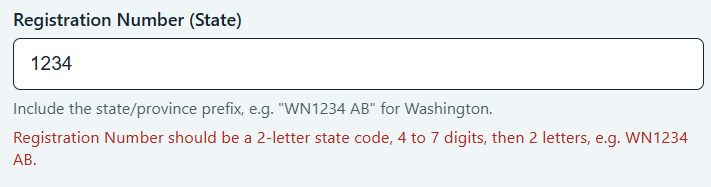 | ||||
| Step | Action | Expected Results | Dev Test | Peer Test |
| 9 | In the user information section use the following: Email: emailuser@email.email Password: abc123DEF456! |
After entering information, the “create account” button should appear bolder and now be clickable | Pass | Pass |
Developer (Sara) 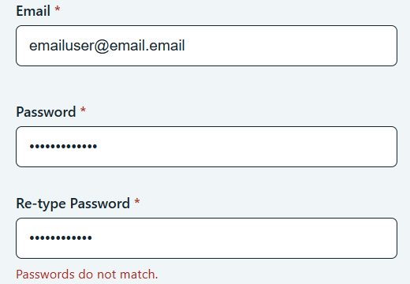 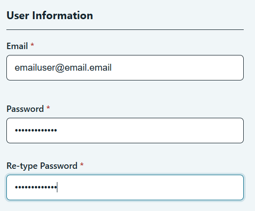 Peer tester (Miguel) - Test 4, Steps 2 to 9 - The completed registration form. All password rules are met and Create Account is active. 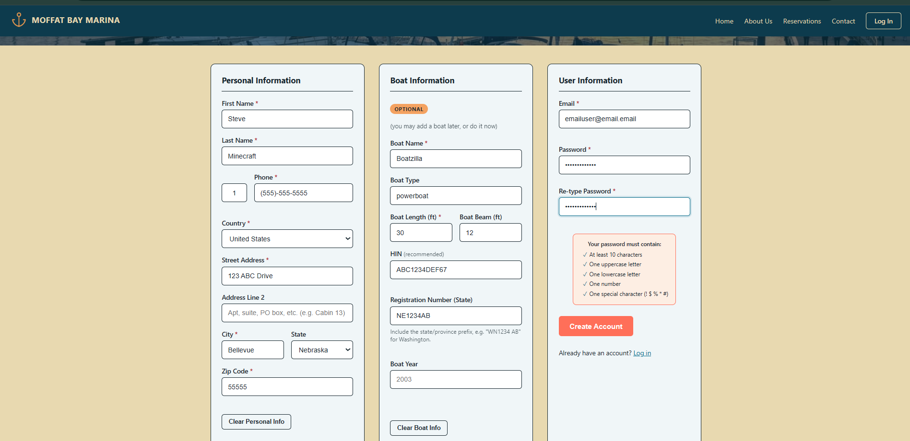 | ||||
| Step | Action | Expected Results | Dev Test | Peer Test |
| 10 | Click the “create account” button | Pass | Pass | |
Developer (Sara) - After clicking create account, here is the redirect: 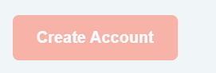 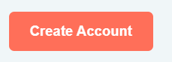 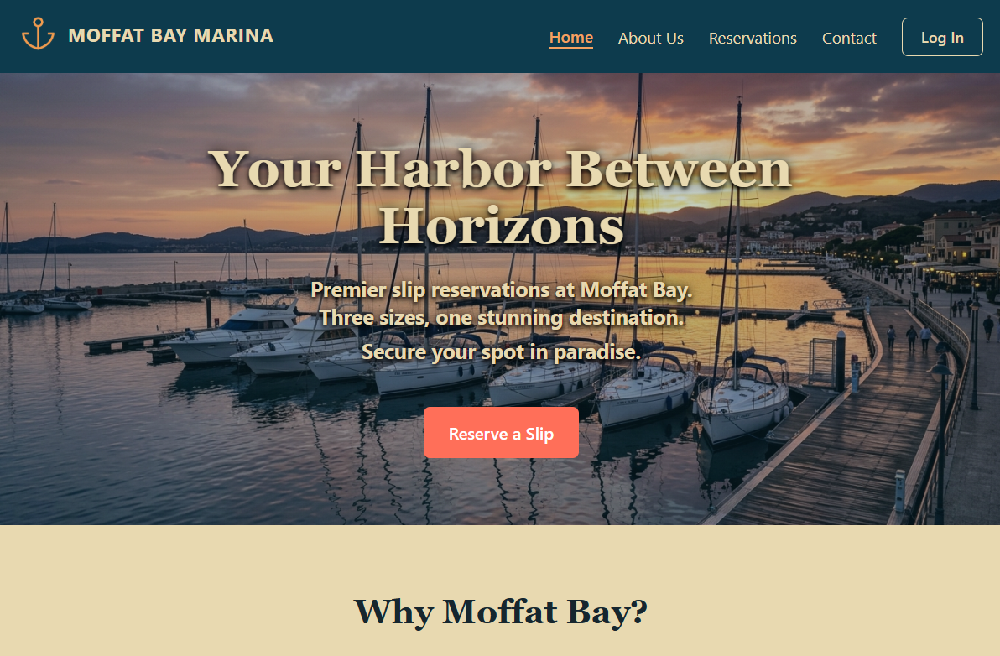 Peer tester (Miguel) - Test 4, Step 10 - After clicking Create Account, the browser redirects to /?registered=true. Note there is no on-page confirmation message. 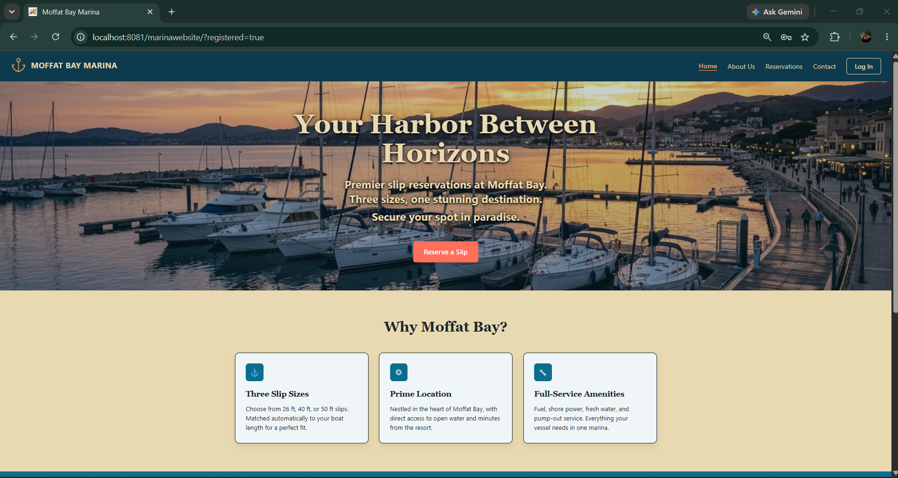 | ||||
| Step | Action | Expected Results | Dev Test | Peer Test |
| 11 | Confirm creation of a customer record with the following MySQL statements:USE MoffatBayMarinaDB;SELECT * FROM Customer WHERE email = “emailuser@email.email”; |
Pass | Pass | |
Developer (Sara) 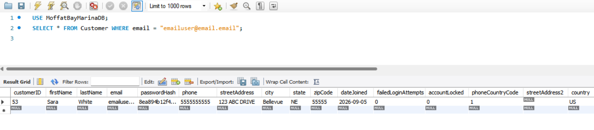 | ||||
| Step | Action | Expected Results | Dev Test | Peer Test |
| 12 | Confirm creation of a boat record with the following MySQL statements:USE MoffatBayMarinaDB;SELECT * FROM Boat WHERE boatName = "Boatzilla"; |
Pass | Pass | |
Developer (Sara) 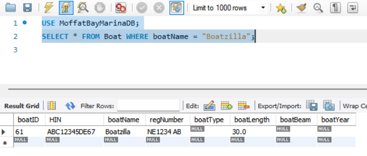 Peer tester (Miguel) - Test 4, Steps 11 and 12 - Database verification. The Customer and Boat rows were both created, and the extra BoatOwnership query confirms the two are linked. 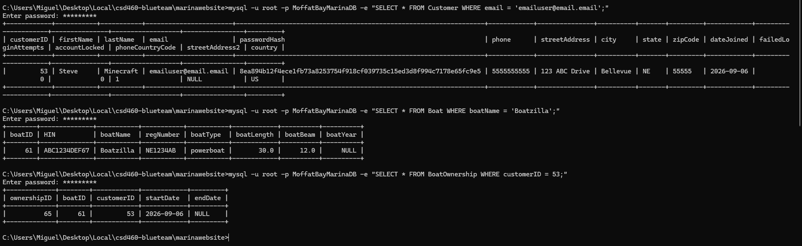 | ||||
Comments
everything worked well. The fields were easy to navigate and everything was really easy to read. The only major issue I noticed is that after creating the account, it redirects you to the main page, but there’s no clear indication the account was successfully created. I think a simple message stating : “success! Your account has been created.” Or something along those lines would be useful.
Confirmed, with three notes. First, I also filled the optional Boat Type and Boat Beam fields, which these steps leave blank - both saved correctly. Second, the registration number was accepted as NE1234AB with no spaces, so the field tolerates either format. Third, I ran one check beyond the written steps: SELECT * FROM BoatOwnership WHERE customerID = 53 returned a row linking the new customer to the new boat with today's start date and a null end date. That confirms registration writes all three tables, not just Customer and Boat. I also saw the same missing confirmation Sara flagged - the redirect lands on /?registered=true but nothing on the page tells the user the account was created.